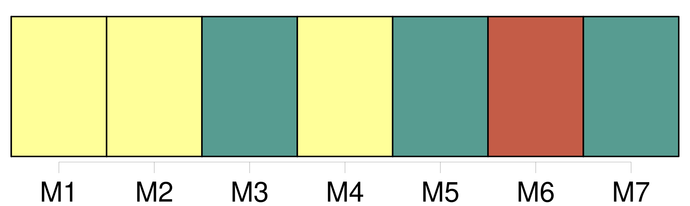
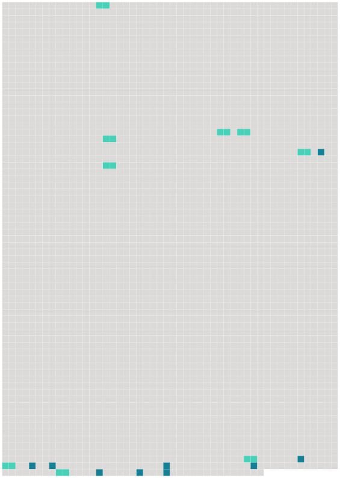

Longueur nb maillons : 18 mentions |
 |
Il les reçut le dimanche et les expédia sur une charrette, ayant prévenu [le fermier] qu'il les suivrait de quelques heures. [63 phrases] Quand ils entrèrent dans la cour, [le fermier] , [maître Gouy] , vociférait contre un garçon et la fermière, sur un escabeau, serrait entre ses jambes une dinde qu'elle empâtait avec des gobes de farine. [L'homme] avait le front bas, le nez fin, le regard en dessous, et les épaules robustes. [5 phrases]
[Maître Gouy] et [son] épouse les escortèrent et la kyrielle des plaintes commença. [2 phrases] Ensuite on visita les cultures : [maître Gouy] les déprécia. [115 phrases] Bientôt ils fatiguèrent [maître Gouy] de leurs conseils, déplorant principalement [son] système de jachères. Mais [le fermier] tenait à [sa] routine. [Il] demanda la remise d'un terme sous prétexte de la grêle. Quant aux redevances, [il] n'en fournit aucune. Devant les réclamations les plus justes, [sa] femme poussait des cris. [1 phrases]
Dès lors [maître Gouy] épargna les fumiers, [laissa] pousser les mauvaises herbes, [ruina] le fonds et [il] s'en alla d'un air farouche qui indiquait des plans de vengeance. |
 |
Il est possible de télécharger la ressource sur la page Ortolang |
Si vous avez des questions ou vous voyez des erreurs, merci d'envoyer un mail à silvia.federzoni89@gmail.com |